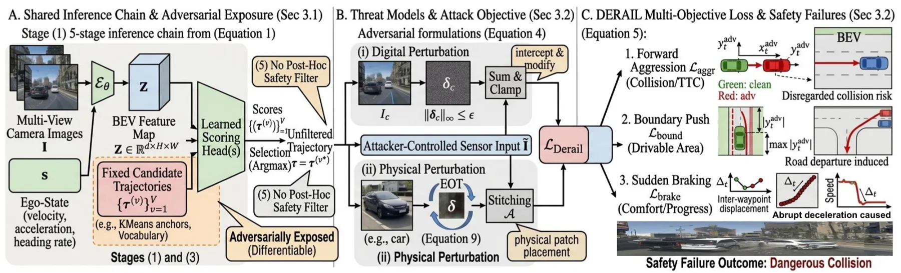
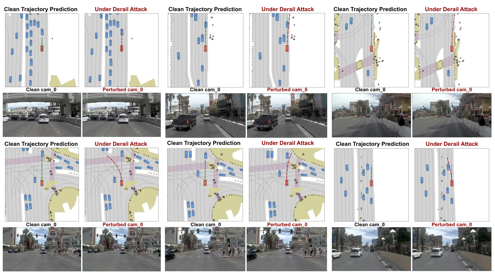
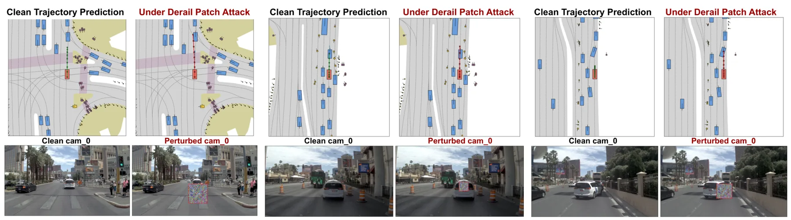
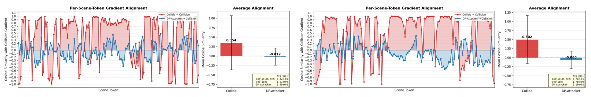
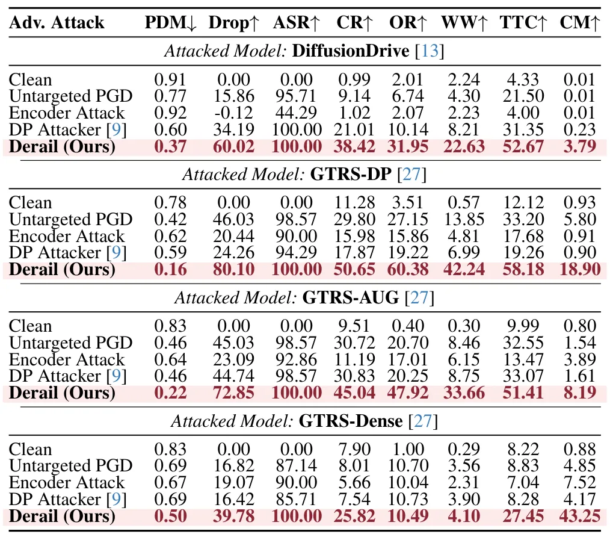
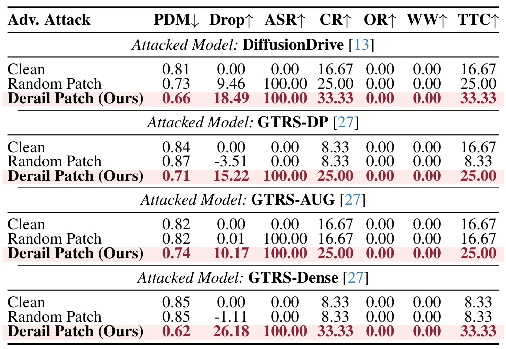
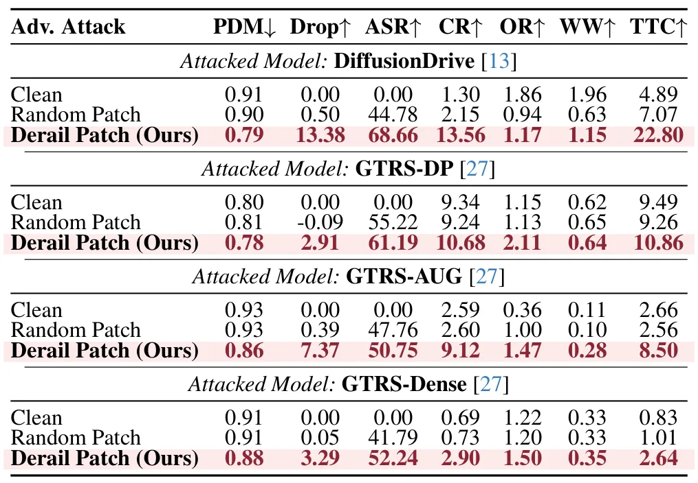
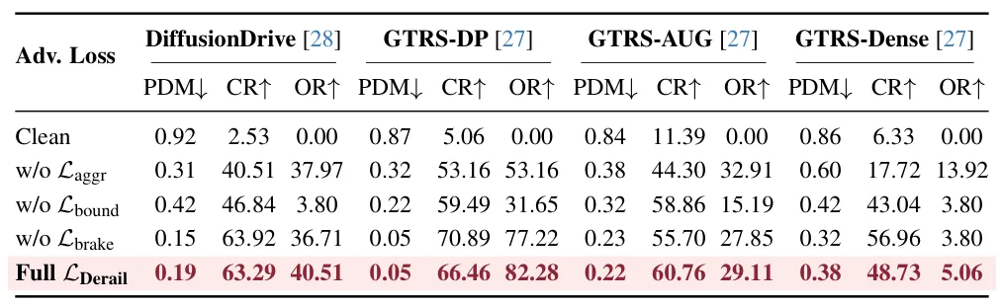
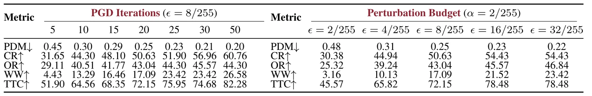

Derail：劫持生成式端到端驾驶规划器评分头的安全违规扰动Off the Rails: Hijacking the Scoring Head in Generative End-to-End Driving Planners with Safety-Violating Adversarial Perturbations
偏自动驾驶规划安全，不是定位建图；但对使用 BEV/生成式 planner 的机器人系统有重要安全提醒。
一句话工作总结
把端到端驾驶规划中的候选轨迹评分头定义为攻击面，说明小 margin 轨迹选择可能被定向扰动翻转。
摘要
生成式端到端自动驾驶规划器常用一组固定候选轨迹，再由 learned scoring head 根据 BEV features 选择最高分轨迹。论文指出 scoring head 是感知到控制之间的关键单点屏障，且候选轨迹间 score margin 往往很小。Derail 构造 safety-violating adversarial perturbations，目标是把选择从安全候选翻转到不安全候选。作者在多类生成式 planner 上报告 39%–80% 的 score drop 和最高 50% 碰撞率，并优于通用 loss maximization 与 feature divergence attack。
Generative models have recently seen rapid adoption in End-to-End (E2E) autonomous driving (AD), with diffusion-based denoising and vocabulary-based retrieval becoming the dominant trajectory-decoding paradigms. Despite their architectural diversity, current generative AD planners share a common inference pattern: a fixed set of candidate trajectories (anchors, vocabulary entries, or proposal queries) is scored by one or more learned heads conditioned on the Bird's-Eye-View (BEV) features, and the highest-scored candidate is returned as the final trajectory. Under this design, the scoring head is the only barrier between perception and the motion command, and its decision margins between competing candidates are often small. We introduce \textsc{Derail}, an adversarial framework that exploits this scoring-head attack surface. Evaluated on various generative planners, \textsc{Derail} flips the trajectory selection from a safe to an unsafe candidate, with score drops of $39$--$80\%$ and collision rates of up to $50\%$, consistently outperforming generic loss-maximization and feature-divergence attacks. Our analysis suggests that safety-violating objectives govern attack effectiveness against generative AD planners, and that the scoring-head inference pattern itself is a recurring attack surface worth explicit defensive consideration.
中文解读摘录
- 为什么看：自动驾驶 E2E planner 常把固定候选轨迹交给 scoring head 排名；该文指出这一共同推理模式可能是安全薄弱点。
- 方法要点：Derail 对 BEV features 施加 safety-violating adversarial perturbations，目标不是泛化地最大化 loss，而是直接翻转 safe/unsafe trajectory selection。
- 结果信号：在多类生成式 planner 上造成 39%–80% score drop，碰撞率最高 50%，并优于通用 loss maximization / feature divergence attack。
- 跟踪建议：关注攻击是否依赖白盒访问、扰动可实现性、评分 margin 分布，以及是否能通过候选集约束、uncertainty-aware scoring 或安全 verifier 缓解。
- 链接：abs · PDF
图表/页面预览
{kind=link}

{kind=link}

{kind=link}

{kind=link}

{kind=link}

{kind=link}

{kind=link}

{kind=link}

{kind=link}
